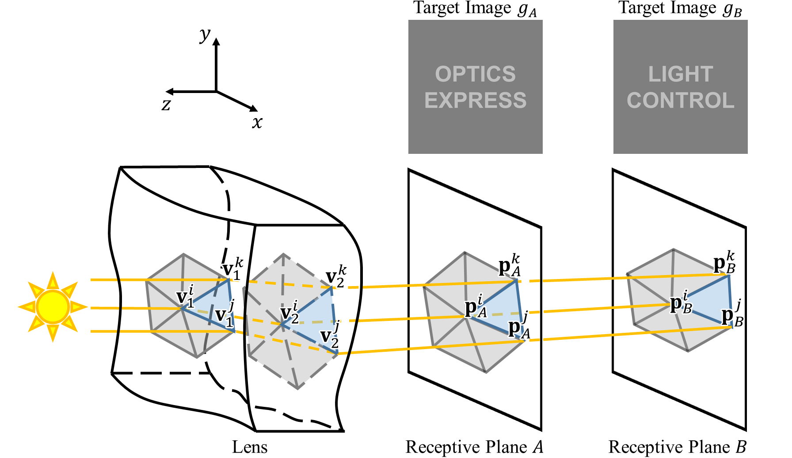
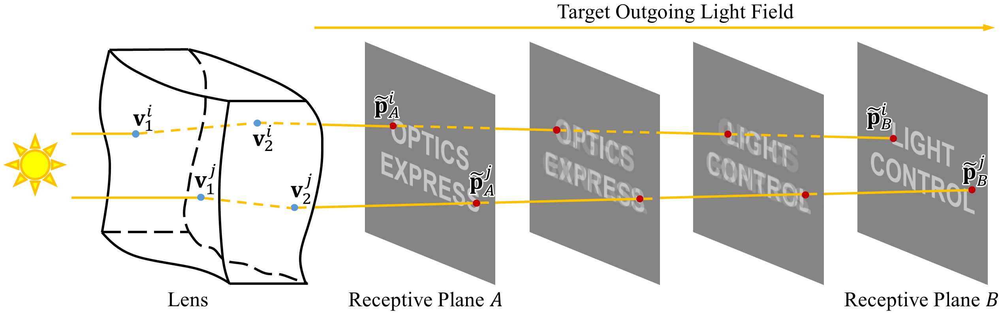
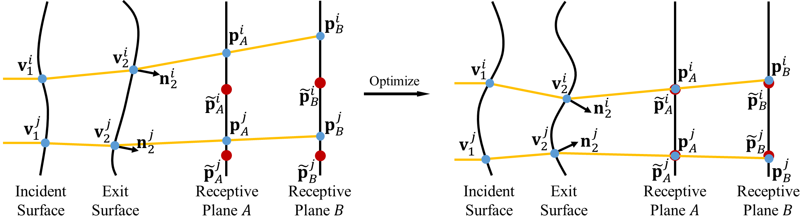
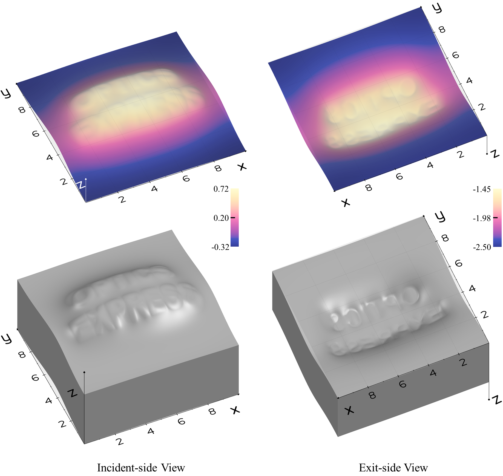
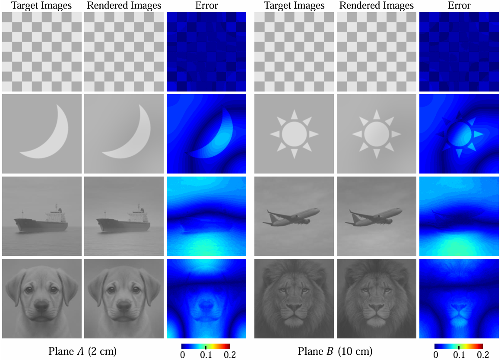
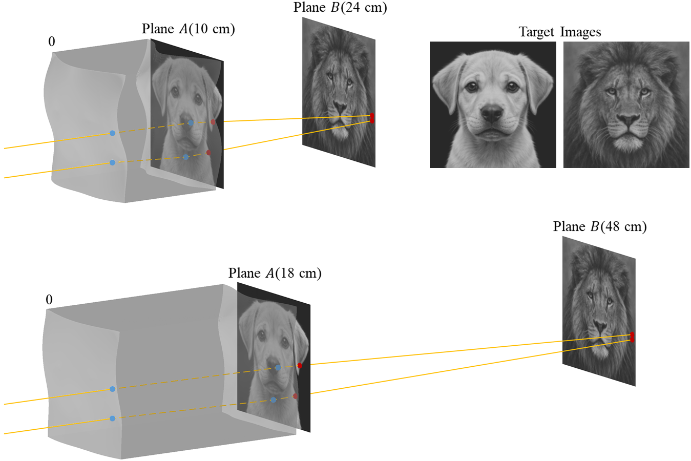
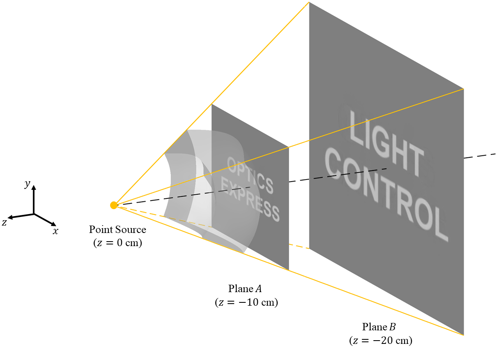

Forward Light Transport Model
The two lens surfaces are discretized into paired triangular meshes. Light propagates through both refractive interfaces and accumulates on two receptive planes, making the entire process differentiable.

Precise simultaneous control of both angular and spatial light-field distributions remains a longstanding challenge in optical design, often requiring complex multi-element configurations. In this work, we propose a compact single-lens solution that achieves unified angular-spatial modulation through the co-optimization of double freeform surfaces. The problem is formulated as an extended caustic design that enforces prescribed irradiance patterns on two distinct receptive planes, where the dual-plane constraint implicitly defines the directional characteristics of the light field while preserving spatial accuracy. This framework eliminates the need for auxiliary optical components while delivering performance comparable to that of conventional multi-lens systems. Comprehensive numerical simulations verify the method's effectiveness, demonstrating accurate and stable control of both angular and spatial light-field properties. The proposed approach establishes a practical foundation for compact, high-performance optical systems and provides a promising route toward integrated angular-spatial light-field engineering.
01
The optimization simultaneously matches prescribed irradiance targets on Plane A and Plane B in one unified formulation.
02
Joint angular-spatial control is achieved with a single double-freeform lens, reducing reliance on cascaded optics.
03
The framework remains stable across diverse target pairs and extends naturally to high-contrast cases and point-source illumination.
The two lens surfaces are discretized into paired triangular meshes. Light propagates through both refractive interfaces and accumulates on two receptive planes, making the entire process differentiable.

An optimal transport(OT) mapping between the target planes provides correspondence priors for each sampled ray, improving optimization stability and physical consistency.

Dual-plane image losses and physical regularization are jointly minimized to update the two freeform surfaces, yielding a compact lens that satisfies angular-spatial constraints.

Both the incident and exit surfaces exhibit smooth freeform features that satisfy the refractive mapping and jointly produce the two prescribed patterns with angular and spatial control.

Across multiple dual-plane target combinations, the method consistently reconstructs distinct irradiance patterns, demonstrating robust angular-spatial controllability.

This high-contrast case demonstrates that the lens can still recover two challenging target patterns on separated receptive planes, while maintaining physically consistent ray deflection and stable image formation.

With a point-source illumination model and solid-angle weighting, the same framework remains effective and preserves dual-plane target fidelity.

@article{sun2026doublefreeform,
title = {Double-Freeform Lens Design for Angular-Spatial Control of Light Fields},
author = {Sun, Yuou and Deng, Bailin and Zhang, Juyong},
journal = {Optics Express},
year = {2026}
}